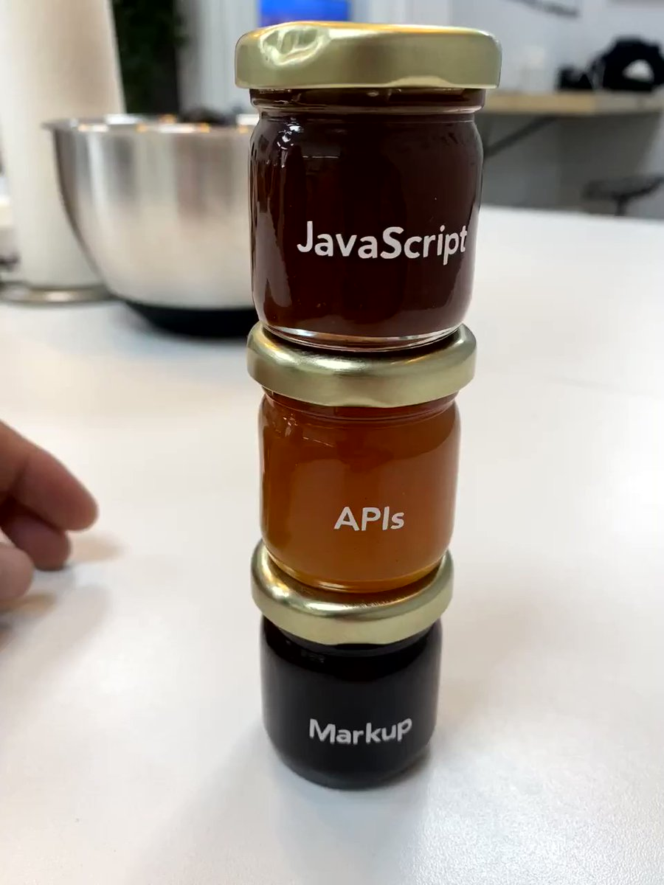

GatsbyJS & Prismic
Ou comment se sentir développeur (profesionnel) avec la JAMstack.
Des problèmes que nous n'avons pas aujourd'hui...
... mais que nous allons avoir.
Pourquoi utiliser Gatsby ?
Performance 🚀
Un problème que nous n'avons pas.
Google is King
Un problème que nous allons avoir.
Juillet 2018 Google Speed Update
Google vous veut du bien...
BE HAPPY !
Comment GatsbyJS réalise cette prouesse ?
- Optimisation des ressources
- Génération d'un site statique


Sécurité 🔒
Pas de serveur, pas de base de données, fichiers JS/HTML.
Très peu couteux 💰
Pas cher, voir gratuit.
Scalable
Si votre produit devient viral.
DX - Developer Experience 👩💻
React + Gatsby = ❤️
(promis je vous montre du code bientôt) 🙏
Versionning 😀
Tous les avantages
Atomicité ⚛️
Déploiement atomique
JAMstack 🍯
de la confiture pour développeur
Yummy Yummy 🤤
C.M.S.
Pourquoi utiliser un C.M.S. ?
Holiday Inn Toulouse Theme utiliséC.M.S.
Les C.M.S. traditionnels vs C.M.S. headless.
Merci à toutes et à tous
Pour aller plus loin venez m'en parler !